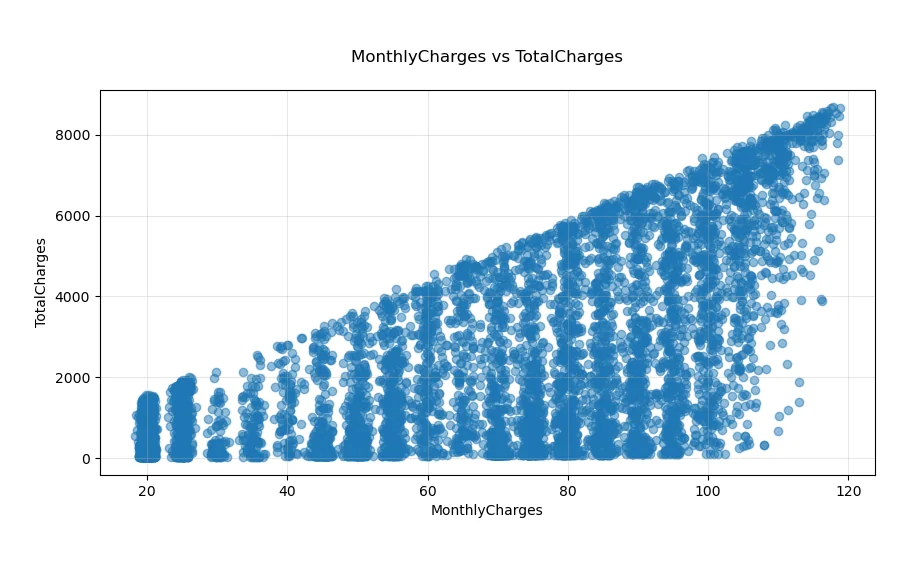
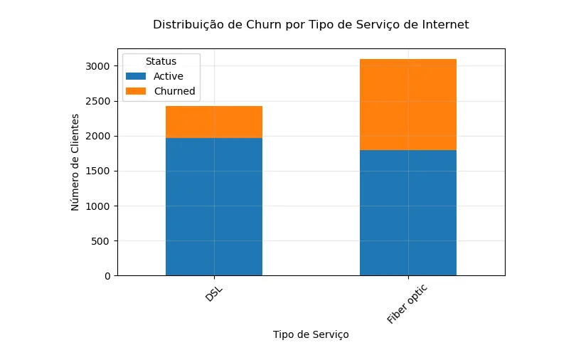
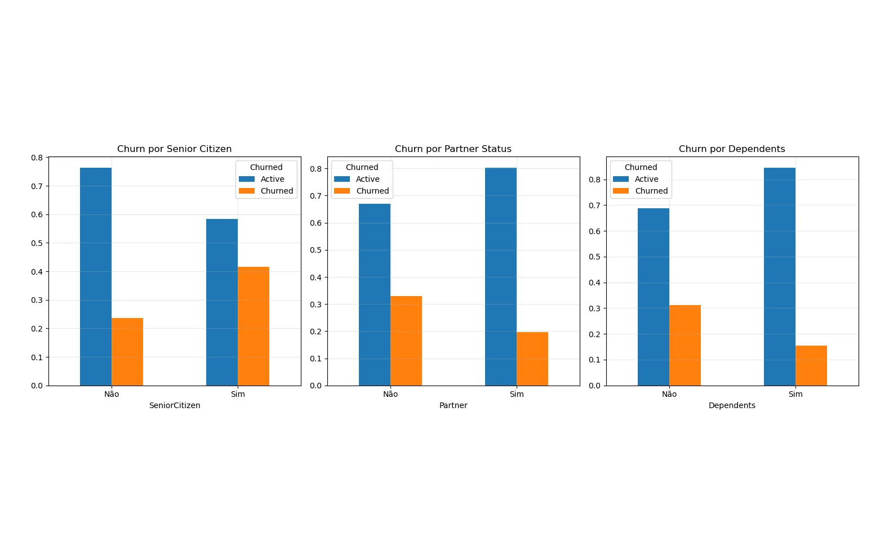

PortfólioModelos preditivos e estatística
Previsão de cancelamento de clientes
Modelo que estima a chance de um cliente de operadora de telefonia e internet cancelar o contrato. A lista de clientes em risco permite oferecer planos de retenção antes da saída. Meta: AUC-ROC de 0,75. O Random Forest chegou a 0,838 no teste.
- Contexto
- Bootcamp de Ciência de Dados, TripleTen, projeto final
- Problema
- Classificação binária: cancela ou não cancela
- Dados
- 4 tabelas de uma operadora, 7.043 clientes
- Métrica
- AUC-ROC, meta de 0,75
Objetivo
Identificar os clientes com maior chance de cancelar, para a operadora oferecer promoções e planos antes da saída.
Critério de aceite: AUC-ROC de pelo menos 0,75 no conjunto de teste.
Dados
- OrigemQuatro arquivos CSV de uma operadora, fornecidos pelo curso: contratos, dados pessoais, internet e telefone.
- Tamanho7.043 clientes. 1.526 sem internet e 682 sem telefone.
- AlvoData de saída preenchida = cancelou. 5.174 ativos (73,5%) e 1.869 cancelados (26,5%).
- Variáveis20 depois da codificação: valores cobrados, tipo de contrato, forma de pagamento, serviços e perfil.
Junção das tabelas
Organização
Modelos e métricas
AUC-ROC no teste
Meta: 0,75. Na validação cruzada: 0,842; 0,836 e 0,823.
Recall dos cancelados no teste
374 cancelados no teste. O Random Forest usou pesos para equilibrar as classes.
O que mais pesa
Importância das variáveis no Random Forest
Soma das 10 primeiras: 84,0%.
Achados
AUC-ROC do Random Forest no teste, 0,088 acima da meta.
dos clientes que cancelaram foram apontados pelo Random Forest. A Regressão Logística achou 50%.
da importância vem do contrato de 2 anos: contrato longo segura o cliente.
Clientes com fibra cancelam mais que os de DSL. A fibra soma 9,2% da importância.
Limites
- Alarmes falsosPrecisão de 0,56 nos cancelados: de cada 100 clientes apontados, 44 não iam cancelar.
- Tempo de casaA data de início saiu do modelo. O tempo de casa entra só pelo valor total cobrado.
- Limiar fixoO corte de 0,5 não foi ajustado ao custo da oferta de retenção.
- Foto do momentoOs dados são de um único corte. O modelo precisa de novo treino com dados recentes.
Gráficos do notebook
Imagens geradas pelo notebook do projeto.





